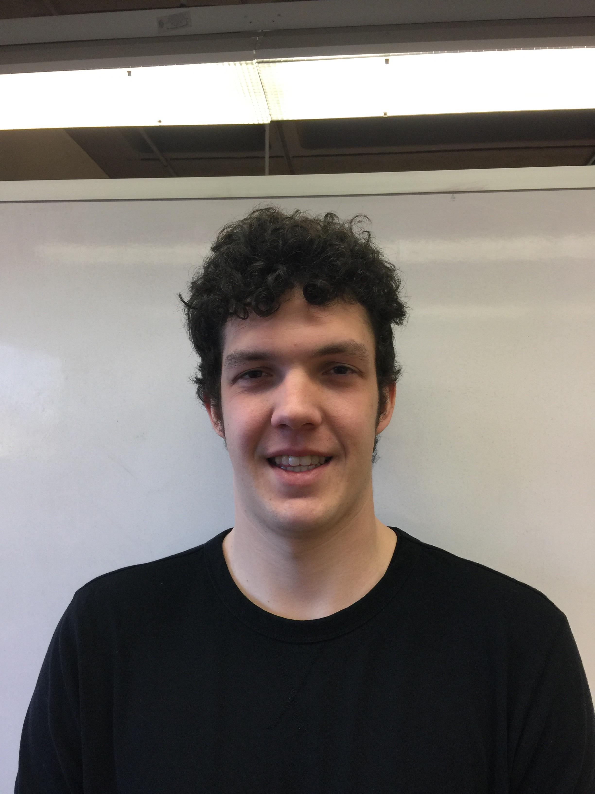

Nick F. (Webmaster): I'm a senior studying Computer Science. I'm passionate
about programming, math, and information security. I work as an Intern with State
Farm's Information (Cyber) Security Division. There, I develop custom security tools and
software to support our penetration testing teams. My career goal is to help companies
identify and fix security vulnerabilities in their infrastructure. In my free time I play video
games, write a programming and security blog, and research hacking. |
|
John O. (Liaison): I am a junior Computer Science major at Illinois State University. At 44 years old, I decided to reinvigorate / rejuvenate my career. I work full time at State Farm in their systems department as a third level team lead, supporting a product that provides telephone call reporting metrics to business areas. I have 5 children, all attend the Unit 5 school district. The oldest is graduating from NCHS this May and the youngest is a 5th grader at NorthPoint Elementary. I have a vast array of experiences to draw from and hope to be an active member of Team Septagon to deliver a quality project for our chosen organization. |
|
Nathan S. (Recorder): My name is Nathan and I am currently a junior at Illinois State University studying Cyber-Security. I recently transferred this semester to Illinois State from my local community college, Highland Community College. I grew up on my family farm where I helped my dad with all our daily chores. I have had previous experience in my community’s Leo Club for three years doing work for my local community. I plan to graduate in the Spring of 2019. |

Kevin M. (Treasurer): Hello my name is Kevin Meier and I am a sophomore at Illinois State University. I am 19 years old and was born and raised in the northwest side of Chicago in Jefferson Park. I am a Information Systems major and while minoring in Business Administration. I enjoy watching all kinds of sports and also love to play when I have the time. |
|

Josh M. (Recorder): Hello my name is Josh Matchuny I am a junior at Illinois State. I was born in Louisville Kentucky and raised in Springfield Illinois. I am majoring in computer science and have previous volunteer experience with meals on wheels in Springfield. |
|
Blake B. (Treasurer): Hello my name is Blake Behme and I am a junior at Illinois State University majoring in Information Systems. I was born and raised in Morton, Illinois and I am excited to see what our group will accomplish. |
|
Nick D. (Historian): My name is Nick, I was born in Arlington Heights, and recently transferred to ISU from Harper College in Palatine, IL. I am an Information Systems Major and plan on graduating in Spring of 2018. I grew up a very creative person, I love to play music and am in a band (I’m also producing our album!), I am a part of a YouTube channel, love to draw, and read comics. |